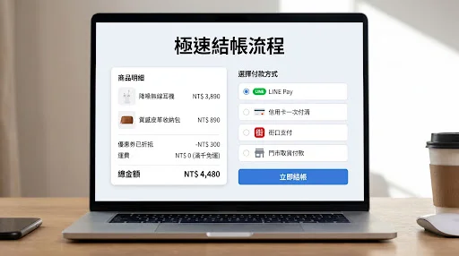
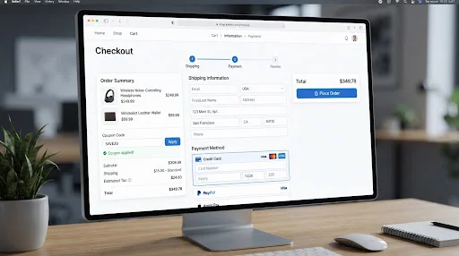
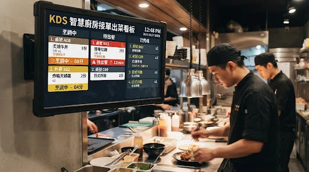
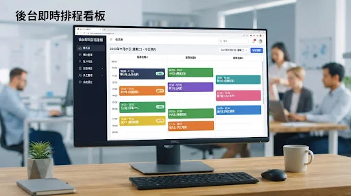
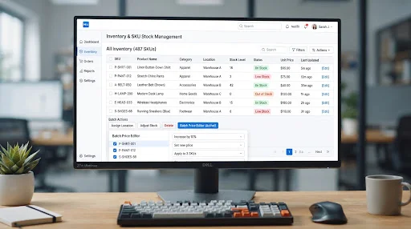
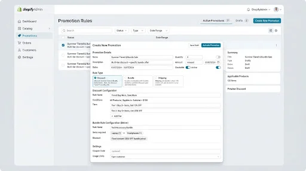
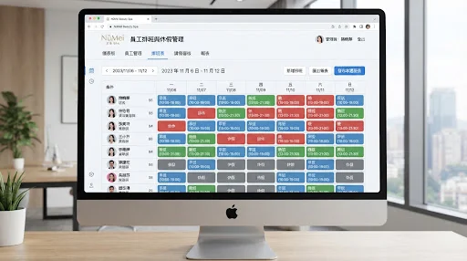
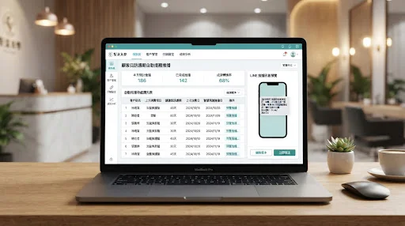

#01
02 ‧ 菜品分類與精美圖文菜單 (Visual Menu & Categories)
03 ‧ 餐點客製化規格與加料選項 (Custom Modifiers & Add-ons)
04 ‧ 購物車即時分桌合併與帳單試算 (Cart & Bill Split/Combine)

05 ‧ 多元行動支付快速結帳 (Mobile Pay Checkout)

06 ‧ 點餐送出成功憑證與廚房即時進度 (Order Confirmation & Live Status)
07 ‧ KDS 智慧廚房接單出菜看板 (Kitchen Display System KDS)

08 ‧ 現場外場桌況與翻桌即時管理 (Floor Plan & Table Management)

09 ‧ 門市現場掃碼核銷與收銀整合 (In-store QR POS Check-in)
10 ‧ 每日沽清與原物料庫存預警 (86 Items & Stock Alert)

11 ‧ 點餐加價購與套餐升級推薦 (Smart Upsell & Combo Builder)

12 ‧ LINE 官方帳號會員一鍵綁定與累點 (LINE Member Loyalty)
13 ‧ 外帶預訂自取與門市取餐地圖 (Takeout Branch Locator)
14 ‧ 用餐時限倒數與續單提醒 (Dining Time Limit Alert)
15 ‧ 會員紅利積點兌換與優惠折抵 (Points Wallet & Discount Center)
16 ‧ 每日營收熱銷排行數據報表 (Sales & Best Sellers Analytics)
17 ‧ 服務人員業績與出餐翻桌效率 (Staff Shift & Efficiency)

18 ‧ 用餐滿意度評價與積點回饋 (Post-meal Feedback & Review)
19 ‧ 自動化顧客回訪週期推播 (Automated Revisit Push)

20 ‧ AI 智能點餐客服與推薦小助手 (AI Ordering Chatbot Assistant)
掃碼點餐系統 ‧ 完整 20 大架構地圖
01 桌邊掃碼點餐
02 圖文分類菜單
03 客製加料選項
04 分桌合併帳單
05 行動多元支付
06 出單成功憑證
07 KDS 廚房看板
08 外場桌況管理
09 POS 核銷收銀
10 沽清庫存預警
11 加價套餐推薦
12 LINE 會員累點
13 外帶自取地圖
14 用餐時限提醒
15 紅利優惠折抵
16 營收熱銷報表
17 翻桌效率分析
18 滿意度評價
19 回訪自動推播
20 AI 點餐小助手